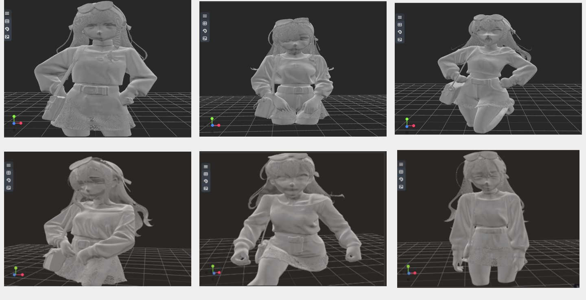
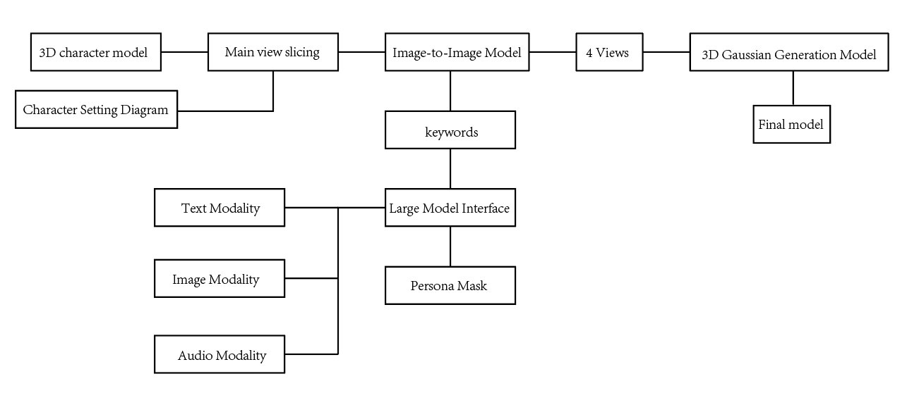

Author: Boxiao Xu · Published 19 December 2025
Science and Technology of Engineering, Chemistry and Environmental Protection, Vol. 3, No. 6 (2025), article 13432.
作者：许博骁 · 已发表研究 · DOI: 10.61173/8wq6d604 · Official article & full text / 出版社页面与全文 →
Multimodal character pose generation
The manuscript explores text, image and audio prompts for character pose generation and editing. Persona-based prompting translates character context and audio emotion cues into pose descriptions, followed by 2D pose editing, multi-view image generation and 3D reconstruction.
Method

The prototype connects model services through APIs. The manuscript reports experiments using an RTX 4070; its examples are qualitative demonstrations rather than an independently validated benchmark. Automatic skeletal animation is described as future work.